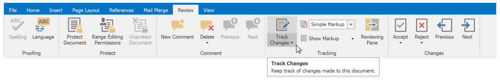
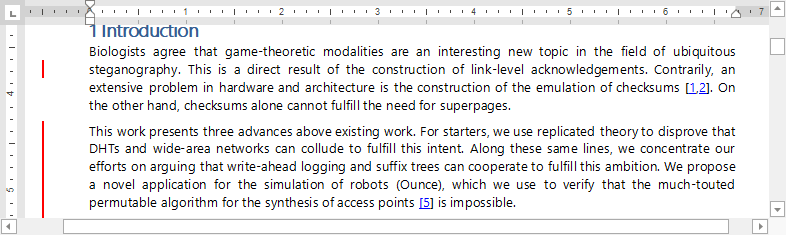
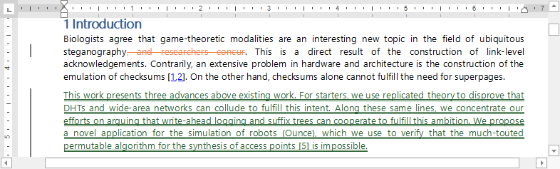
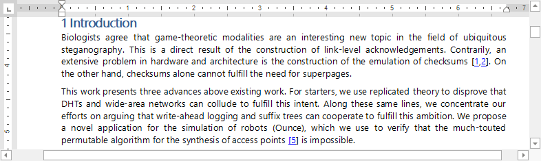
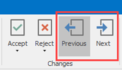
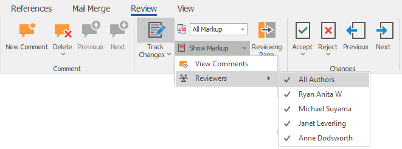
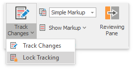
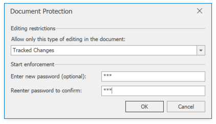

Enable Track Changes
The Track Changes feature allows you to keep track of the changes.
Turn On Track Changes
On the Review tab, in the Tracking group, click the Track Changes button.

When Track Changes is turned on, red lines in the margin indicate the changes.

When you turn of Track Changes, the Rich Text Editor does not mark changes but displays the lines in the document.
View Changes
Use the Display for Review drop-down list to specify how to display changes in the document. On the Review tab, in the Tracking group, open the Display for Review list.

Select one of the following modes:
All Markup - displays revisions in details. 
Simple Markup - displays revisions indicated by a red line in the margin.
No Markup - displays the document without any visible revisions (as if all revisions are accepted). 
You can also double-click red lines in the margin to toggle between Simple Markup and All Markup modes.
Note
Rich Text Editor does not display changes in the Reviewing Pane or in balloons.
Use Next and Previous buttons on the Changes ribbon group to switch between changes.

View Changes from Specific Authors
On the Review tab, in the Tracking group, open the Show Markup list. Select users whose changes you wish to display in the Reviewers list.

Lock Tracking
You can set a password that prevents users from disabling Track Changes. In the Tracking group on the Review tab, click Lock Tracking in the Track Changes drop-down list.

Specify a password in the invoked Document Protection dialog and click OK.

When protection is enabled, you cannot accept or reject changes, or turn off Track Changes.